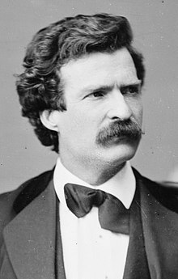

Presentations
Unit 10
Learning outcomes
By the end of this unit you should:
- understand the differences between good and bad presentatins
- have practised giving a presentation using a script
- have practised giving a presentation using bullet-point notes
Activity 1
Watch this poor presentation and identify how to improve it. Your professor may give you a live (poor) presentation, instead.
Source: PolyU ELC 2012
Activity 2
Work in small groups. Discuss how the presenter in Activity 1 could improve. Be prepared to demonstrate!
Activity 3
Work in small groups. Discuss how to fill in this table.
| Aspects | Things to do during presentations | Things not to do during presentations |
|---|---|---|
| Eye contact | ||
| Facial expressions | ||
| Posture | ||
| Movement | ||
| Gestures |
Activity 4
Watch this improved presentation and see how it has been improved. Your professor may give you a live (good) presentation, instead.
Source: PolyU ELC 2012
Activity 5
Practise delivering the introduction of a presentation using this script.
Thank you. Good (morning|afternoon). My name is [your full name]. Today, I would like to share my ideas with you on how to give a good presentation. It’s important for all of us here. We all need to give a presentation to graduate from this university. This presentation will be divided into two parts: language skills and presentation skills.
Activity 6
Watch this slideshow presentation and learn four key concepts about presentations.
Activity 7
Practise delivering a full presentation using a script. Feel free to use your cell phone to refer to these notes.
How to give a good presentation
Thank you. (Good morning|afternoon). My name is _____. Today, I’d like to share my ideas with you on how to give a good presentation. It’s important for all of us here, as we all need to give a presentation to graduate from this university. This presentation will be divided into two parts: language skills and presentation skills.
I’d like to begin with language skills. Language skills are acquired over years and there is no quick fix. Language skills can be divided into three sections, namely fluency, accuracy and pronunciation. Let me move straight onto fluency. Fluency essentially means being able to talk without stopping, that is avoiding dead air. Dead air gives that impression that you don’t know what to say and therefore seems unprofessional. Next comes accuracy. Accuracy essentially means making no grammatical mistakes. The most important aspect is not actually grammar, but meaning. However, some grammatical mistakes affect the meaning and can confuse your audience. In addition, making language mistakes may create a negative impression. Finally, I’d like to move onto pronunciation. This is vital. Poor pronunciation greatly affects the audience’s impression of you and your message. Words that are pronounced wrongly may not be understood. Worse still, when you use the incorrect intonation you may sound rude. Take care to avoid speaking in a staccato manner and stress the important words. That’s all for language skills.
I’d now like to move onto presentation skills. Presentation skills can also be divided into three sections. They are paralinguistics, organization and interest. Okay, paralinguistics. Paralinguistics is all about body language: gestures, facial expressions, posture, movement and eye contact. All of these are vital and can radically alter your intended message. Next, we have organization. Organization comprises ordering information in an appropriate way and showing your audience how you have organized it. Commonly, we’ll use introductions, linking words and conclusions to achieve this aim. Okay. Let me move onto interest. Sometimes the topic of a presentation is intrinsically interesting, but at other times the topic may be more mundane; however, you can inject your enthusiasm into the presentation to retain the audience’s interest, and if appropriate harness humour. That’s all for presentation skills.
To sum up, I’ve introduced you to two key areas related to presentations: language skills and presentation skills. Language skills consist of fluency, accuracy and pronunciation, while presentation skills include paralinguistics, organization and interest. I hope that helps you and don’t forget practice makes perfect. Thank you. Are there any questions?
Activity 8
Practise delivering the introduction of a presentation using these bullet-point notes. Feel free to use your cell phone to refer to these notes.
Introduction
- name
- topic
- purpose
- preview
Language skills
- Fluency - no dead air
- Accuracy - no mistakes
- Pronunciation - clear
Presentation skills
- Paralinguistics - gestures, eye contact and posture
- Organization - preview, linking and summary
- Interest - inject enthusiasm
Conclusion
- Summary
- Final comment
- Questions
Activity 9
Copy and paste any presentation script given in Activity 7 into this online tool. The Pronunciation Scaffolder works best on formal scripts that are written in full sentences.
If you prepare a presentation script for your graduation thesis presentation, you can use this tool. Many pronunciation features will be automatically visualized. This tool uses a combination of rule-based parsing and natural language processing. The output is not perfect, but it is good enough.
Unit review
Answer these questions about your graduation thesis presentation.
- Have you prepared your script or notes?
- Have you created a slideshow?
- Have you practised saying it?
- Have you practised saying in front of someone?
- Have you watched a video recording of your presentation?
- Can you pronounce all the words clearly?
- Are you confident?
If you answered no to any question, take some action. If you are unsure of what to do, ask your professor.
Motivate me
“There are two types of speakers: Those who get nervous and those who are liars.” – Mark Twain
